quipu
Sosialt, uten jaget. quipu er en lukket kanal der barn i samme klasse deler, spør og hjelper hverandre. Uten likes, algoritmer og fremmede, og med voksne som passer på.
Slik fungerer det
Barna deler med klassen. Appen sørger for at det forblir trygt og rolig.
Del noe med klassen
Skriv rett i feeden. Merkelapper som Spørsmål, Takk til og Har laget er valgfrie, og et filter stopper stygge ord og personopplysninger.
Snakkebobler, ikke tall
Innleggene har formen fra logoen. Andres meldinger står i motsatt farge, så de synes best. Ingen likes, følgere eller tellere.
Figurer i stedet for selfies
Barna velger en av 24 figurer. Ingen bilder av seg selv, og ingenting å sammenligne seg med.
Åpent om at voksne leser
Første gang barnet logger inn, forklarer quipu at foresatte i gruppa kan lese det som deles.
Valgt bort med vilje
Det motsatte av TikTok og Snapchat
Grepene forskere, myndigheter og barneorganisasjoner peker på som skadelige for barn, finnes ikke i quipu.
Ingen likes eller følgere
Ingenting å konkurrere om, og ingen tall å sammenligne seg med.
Ingen uendelig scrolling
Feeden viser de siste tre dagene og tar slutt: «Du er oppdatert».
Ingen varsler som lokker
Barna får aldri varsler. quipu prøver ikke å trekke dem tilbake.
Ingen algoritme
Innleggene vises i rekkefølgen de ble delt. Ingen profilering.
Ingen fremmede
Ingen søk, profiler å bla i, venneforslag eller direktemeldinger.
Ingen reklame eller sporing
Ingen analyseverktøy, sporingspiksler eller kode fra annonsører.
24 figurer i quipu-fargene
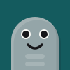
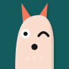
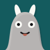
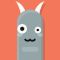
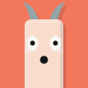
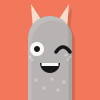
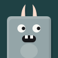
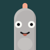
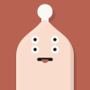
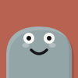
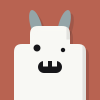
Voksne på laget
Foresatte lager kontoene, setter grensene og bestemmer hvem som får bli med.
Grenser som holder
Skjermtid, åpningstider og antall innlegg per dag. Grensene håndheves på serveren, så de kan ikke omgås.
Ingen kommer inn uten et ja
Med invitasjonskoden ber man om å bli med. Den som eier gruppa, ser hvem som spør, og godkjenner hvert barn.
Voksenkontakt
En egen kanal for foresatte i klassen, med varsler på e-post eller push. Barna ser den aldri.
Speilet i lys og mørk
Korall om dagen, petrol om kvelden. Lys og mørk modus er speilbilder av hverandre: der den ene bruker korallskalaen, bruker den andre petrolskalaen. All tekst er sjekket mot WCAG AA.
Trygt under panseret
Posisjonen fjernes
Bilder tegnes på nytt på telefonen, og serveren fjerner GPS og annen skjult informasjon før noe lagres.
Få dører inn
Bare to kodepakker på serveren, ingen kode fra andre i nettleseren, streng sikkerhetspolicy og krypterte push-varsler.
Data i Europa
Alt lagres i Frankfurt. Ingen data selges eller deles, og foresatte kan slette alt når som helst.